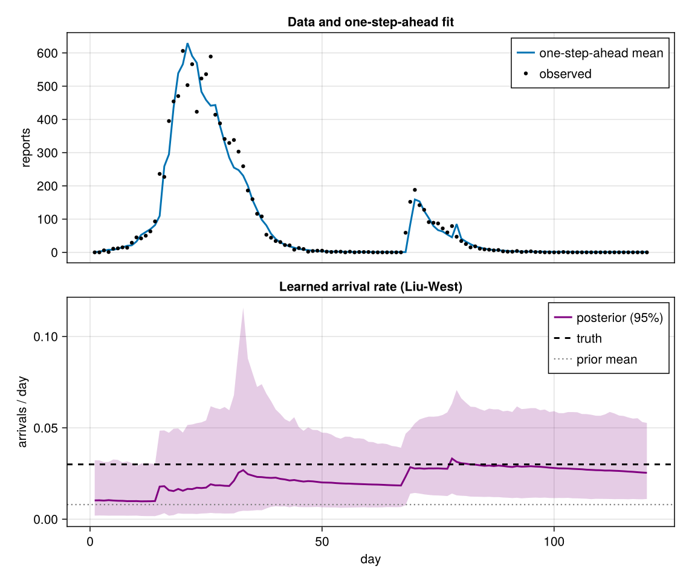

Arrival processes¶
Besides continuous latents, a model can declare jump drivers.
An ArrivalProcess is a marked point process: on each stochastic step it fires with a hazard given by its rate function, draws a mark (here the size of an importation), and applies a transition! to the compartments (here moving that many people from S to I).
build_stochastic_update combines all the drivers into one noise update, with Brownian diffusion for the latents and marked jumps for the arrivals.
Jumps have no Gaussian representation, so arrival processes need the particle filter. This example simulates recurring importations into a seasonal SEIRS epidemic, then learns the unknown arrival rate online with the Liu-West filter, with the step-by-step loop written out.
using ConfigurableEpi
using AlgebraicEpiMech
using Catlab: dom
using CairoMakie
using LinearAlgebra, Distributions
using LowLevelParticleFilters: AdvancedParticleFilter, simulate, reset!, correct!, predict!,
particles, expweights, state
import Random
Random.seed!(1)
Model and arrival driver¶
N = 10_000.0
true_arrival_rate = 0.03 # per day: a mean wait of about 33 days, so a few arrivals over 120 days
hyperparams = (
gamma = 1.0, R0_baseline = 1.6, seasonal_amp = 0.15, N = N,
arrival_rate = true_arrival_rate, import_mean = 250.0,
)
pn = attach_observation(dom(create_model(OnePopulationTyping(), SEIRS())), AtCompartment(:I); n_stages = 2)
function rates(latent, hyper, t)
seasonal = 1.0 + hyper.seasonal_amp * cospi(2 * t / 365.0)
return (transmission_S_I = hyper.gamma * hyper.R0_baseline * latent.Rt * seasonal / hyper.N,)
end
petri_vf! = build_petri_vf(
pn, rates; defaults = (E_to_I = 0.5, I_to_R = 1.0, R_to_S = 1.0 / 180, obs_inflow_I = 1.0, O_I_1_to_O_I_2 = 0.5),
)
rt_spec = AR1ParamSpec(:Rt; init = positive_gaussian(:Rt, 1.0, 0.25), mu = 1.0, tau = 9.5, sigma = 0.23)
The arrival is stateless: its mark is absorbed into the compartments, so it adds no slots to the state vector.
Its rate reads arrival_rate from the hyperparameters, which makes the rate an ordinary parameter that can be learned.
seed_transition builds the transition! that moves import_size people from S to I.
compartments = ode_names(StateLayout(pn, (rt_spec,); signal_names = (:reports,)))
arrival = ArrivalProcess(
:importation;
rate = (_x, _latent, p, _t) -> p.arrival_rate,
mark = (p, rng) -> (import_size = p.import_mean * (0.6 + 0.8 * rand(rng)),),
transition! = seed_transition(compartments, :S, :I; size_key = :import_size),
)
drivers = (rt_spec, arrival)
layout = StateLayout(pn, drivers; signal_names = (:reports,))
stochastic = build_stochastic_update(layout, drivers)
obs_model = (SignalObservationSpec(1, NegBinomialNoise(phi = 100.0); mean_modifier = 1.0, name = :reports),)
init = (S = N - 20.0, E = 10.0, I = 10.0, R = 0.0, O_I_1 = 0.0, O_I_2 = 0.0)
x0 = vcat([init[n] for n in ode_names(layout)], collect(stochastic.to_unconstrained((Rt = 1.0,))))
ode_var = (S = 4.0, E = 4.0, I = 4.0, R = 1.0, O_I_1 = 1.0, O_I_2 = 1.0)
P0 = Matrix(Diagonal(vcat([ode_var[n] for n in ode_names(layout)], [0.2])))
dynamics = build_full_dynamics(petri_vf!, stochastic, layout; dt = 1.0, supersample = 4, obs_jitter = 0.0)
(state_dimension = layout.total_dim, latents = layout.latent_names)
Simulated data¶
The truth is simulated with the arrival rate fixed at its true value.
pf_truth = AdvancedParticleFilter(
500, build_pf_dynamics(dynamics, layout), build_pf_measurement(layout, obs_model, stochastic),
build_measurement_logpdf(layout, obs_model, stochastic), nothing, MvNormal(x0, P0);
p = hyperparams, ny = 1, nu = 0, rng = Random.Xoshiro(1),
)
T = 120
x_true, _, y_true = simulate(pf_truth, fill(Float64[], T), hyperparams)
y_data = [y[1:1] for y in y_true]
Learning the arrival rate¶
build_learned_hyperparams appends the learned parameters to each particle, in the unconstrained chart of their priors.
The prior mean here is well below the truth, so the filter has to find the rate from the data.
The particle adapters take the learned block so each particle uses its own arrival_rate.
prior_mean = 0.008
learned = build_learned_hyperparams(positive_gaussian(:arrival_rate, prior_mean, 0.01), layout)
update_hyperparams! = build_hyperparam_updater(learned; discount = 0.97)
pf = AdvancedParticleFilter(
4_000,
build_pf_dynamics(dynamics, layout; learned),
build_pf_measurement(layout, obs_model, stochastic; learned),
build_measurement_logpdf(layout, obs_model, stochastic; learned),
nothing,
MvNormal(vcat(x0, collect(learned.to_unconstrained((arrival_rate = prior_mean,)))), Matrix(Diagonal(vcat(diag(P0), [0.5]))));
p = hyperparams, ny = 1, nu = 0, rng = Random.Xoshiro(2), # the filter's resampling RNG
)
Each step corrects on the new count, records the weighted posterior of arrival_rate, refreshes the learned parameters with the Liu-West shrink-and-jitter kernel, and predicts forward.
function wquantile(vals, w, q)
idx = sortperm(vals)
cw = cumsum(w[idx]) ./ sum(w)
return vals[idx][something(findfirst(>=(q), cw), length(vals))]
end
acc = layout.accumulator_indices[1]
onestep, rate_mean, rate_lo, rate_hi = zeros(T), zeros(T), zeros(T), zeros(T)
reset!(pf)
for t in 1:T
w = expweights(pf)
onestep[t] = sum(w .* [max(x[acc], 0.0) for x in particles(pf)]) / sum(w)
correct!(pf, Float64[], y_data[t], hyperparams)
rate, w = [learned.extract(x).arrival_rate for x in particles(pf)], expweights(pf)
rate_mean[t] = sum(w .* rate) / sum(w)
rate_lo[t], rate_hi[t] = wquantile(rate, w, 0.025), wquantile(rate, w, 0.975)
update_hyperparams!(state(pf).xprev, expweights(pf))
predict!(pf, Float64[], hyperparams)
end
(prior_mean = prior_mean, final_posterior_mean = round(rate_mean[end]; digits = 4), truth = true_arrival_rate)
fig = Figure(size = (760, 640))
counts = Axis(fig[1, 1]; ylabel = "reports", title = "Data and one-step-ahead fit")
lines!(counts, 1:T, onestep; label = "one-step-ahead mean", linewidth = 2)
scatter!(counts, 1:T, first.(y_data); label = "observed", color = :black, markersize = 6)
axislegend(counts; position = :rt)
learning = Axis(fig[2, 1]; xlabel = "day", ylabel = "arrivals / day", title = "Learned arrival rate (Liu-West)")
band!(learning, 1:T, rate_lo, rate_hi; color = (:purple, 0.2))
lines!(learning, 1:T, rate_mean; label = "posterior (95%)", linewidth = 2, color = :purple)
hlines!(learning, [true_arrival_rate]; label = "truth", linewidth = 2, linestyle = :dash, color = :black)
hlines!(learning, [prior_mean]; label = "prior mean", linestyle = :dot, color = :grey)
axislegend(learning; position = :rt)
linkxaxes!(counts, learning)
hidexdecorations!(counts; grid = false)
fig

The rate is identified only by the arrivals the data contain, and 120 days hold a handful. The posterior moves up from the prior and its interval widens to take in the truth, but it stays wide; a longer series, or several locations sharing the rate, pins it down further.
The engine route, build_inference(PF(n_particles = 4000), LiuWest(discount = 0.97), model; ...), runs the same loop from an EpiModel; a UKF or EnKF engine rejects a model with jump drivers.